<ion-tabs>

  <ion-tab-bar slot="bottom">
    <ion-tab-button tab="login" href="/tabs/login" *ngIf="!isLogin">
      <ion-icon aria-hidden="true">
        
      </ion-icon>
      <ion-label>Login</ion-label>
    </ion-tab-button>

    <ion-tab-button tab="registro" href="/tabs/registro" *ngIf="!isLogin">
      <ion-icon aria-hidden="true" name="ellipse"></ion-icon>
      <ion-label>Registro</ion-label>
    </ion-tab-button>

    <ion-tab-button tab="tareas" href="/tabs/tareas" *ngIf="isLogin">
      <ion-icon aria-hidden="true" name="square"></ion-icon>
      <ion-label>Tareas</ion-label>
    </ion-tab-button>

    <ion-tab-button tab="contactos" href="/tabs/contactos" *ngIf="isLogin">
      <ion-icon aria-hidden="true" name="square"></ion-icon>
      <ion-label>Contactos</ion-label>
    </ion-tab-button>
  </ion-tab-bar>

</ion-tabs>
